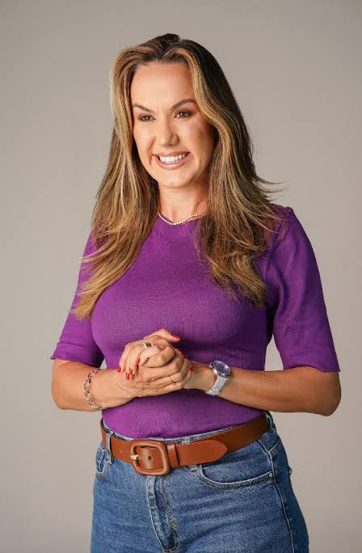

Conjunto de Propostas Estruturantes Baseadas em Evidências
Destinatária: Renata Daguiar | Pré-candidata a Deputada Distrital
Elaboração: Ana Carolina Leite de Oliveira (Assessora Técnica Parlamentar) com o suporte da Equipe de Comunicação

Este documento consolida as propostas fundamentais para a plataforma política de Renata Daguiar para a disputa à Câmara Legislativa do Distrito Federal (CLDF). A estratégia foi desenhada para unificar o histórico e legado da pré-candidata no Instituto Reciclando Futuro e na Secretaria da Mulher com as novas demandas técnicas enviadas pelas equipes de saúde, educação e comunicação.
Para garantir viabilidade técnica e evitar o vício de iniciativa (barreira jurídica comum que veta projetos de deputados que criam despesas diretas ao Estado), as pautas foram desenhadas sob o modelo de Políticas Distritais de Diretrizes, Marcos Regulatórios e Indicações Governamentais. Isso assegura o ineditismo da pauta, concede a "paternidade" política à Renata e blinda os projetos contra vetos do Executivo.
Bandeira de identidade que conecta a atuação prática da pré-candidata com soluções modernas de sustentabilidade, governança e empreendedorismo social.
| Proposta / Mecanismo Legal | Escopo Técnico e Inovação | Apelo Eleitoral / Vetores de Votos |
|---|---|---|
| Marco de Fomento aos Negócios de Impacto Social Projeto de Lei Distrital | Regulamenta incentivos para empresas e cooperativas que unem sustentabilidade financeira e resolução de problemas sociais. Alinha o DF às tendências mundiais de investimentos ESG e critérios de transição ecológica. | Diálogo direto com o empresariado moderno, investidores de risco e startups de inovação no DF. |
| Programa Núcleo de Integração Assistencial Projeto de Lei / Parceria Acadêmica | Suporte técnico, jurídico e contábil obrigatório para organizações do Terceiro Setor nos primeiros 3 anos de CNPJ. Utiliza fomento e editais de estágio com acadêmicos de Direito, Administração Pública e Economia das faculdades do DF. | Resolve a principal dor das pequenas ONGs (burocracia). Conquista o voto jovem universitário por meio de vagas de estágio prático. |
| Fundo Emergencial do Terceiro Setor Indicação ao GDF / Projeto de Diretrizes | Institui mecanismos de descentralização e repasses mínimos automáticos para organizações recém-criadas com base territorial periférica, garantindo fôlego institucional até que fiquem aptas a receber emendas. | Cria uma rede de gratidão e capilaridade política em lideranças comunitárias nas regiões administrativas (RAs). |
| Compras Públicas de Cooperativas Projeto de Lei de Diretrizes de Contratos | Garante prioridade e cota em contratos de prestação de serviços do GDF para cooperativas de reciclagem e triagem devidamente registradas, fomentando a autonomia de renda estável. | Fideliza o voto de causa de milhares de catadores de materiais recicláveis e ativistas ambientais. |
| Banco Distrital de Materiais e Reuso Projeto de Lei do Descarte Sustentável | Obrigatoriedade de destinação sistemática e doação de mobiliários, equipamentos eletrônicos e materiais escolares descartados por órgãos do GDF em bom estado para as OSCs e escolas comunitárias cadastradas. | Demonstra responsabilidade fiscal, sustentabilidade prática e reduz o custo operacional de pequenas entidades sociais. |
Consolida o protagonismo de Renata na defesa de mulheres vulneráveis, mães solo e famílias com PCDs / pessoas com transtornos do neurodesenvolvimento.
| Proposta / Mecanismo Legal | Escopo Técnico e Inovação | Apelo Eleitoral / Vetores de Votos |
|---|---|---|
| Política de Empregabilidade para Mães Solo e Atípicas Projeto de Lei Distrital | Institui a reserva de 5% de vagas em contratações públicas terceirizadas do GDF para mães de baixa renda (CadÚnico). Articula junto ao órgão federal a segurança jurídica para flexibilidade laboral sem a perda de benefícios assistenciais (BPC). | Pauta de altíssimo apelo social e emocional. Mobiliza em massa associações de mães atípicas e famílias vulneráveis. |
| Frente do Cuidado e Selo Empresa Amiga da Mulher Resolução Legislativa / Selo de Incentivo | Criação de Frente Parlamentar permanente para debater a "Economia do Cuidado" e concessão de incentivos fiscais distritais para empresas privadas que adotarem regimes especiais para mães atípicas. | Pioneirismo temático na CLDF, atraindo o interesse de acadêmicas do feminismo e grandes veículos de comunicação. |
| Programa Escudo Feminino e Autodefesa Projeto de Lei de Amparo | Implementa auxílio financeiro para cursos de proteção, apoio jurídico célere e fomento a treinamentos de autodefesa para mulheres vítimas de violência doméstica sob medida protetiva. Criação do Cadastro Distrital de Condenados por Violência Doméstica. | Resposta direta à crise crônica de feminicídios no DF. Atrai o eleitorado feminino indignado que exige segurança prática. |
| Rede de Acolhimento "Sala Roxa" nos Bairros Indicação Governamental Descentralizada | Solicitação para a abertura de polos de escuta terapêutica e apoio psicológico continuado em regiões com altos índices de violência contra a mulher. Expande os serviços unificados da Casa da Mulher Brasileira de forma móvel. | Cria bases de apoio comunitário e pontos focais de acolhimento físico com a identidade visual da parlamentar. |
Pacote técnico voltado à reestruturação da eficiência do atendimento médico básico, reduzindo filas crônicas e interiorizando exames de prevenção.
| Proposta / Mecanismo Legal | Escopo Técnico e Inovação | Apelo Eleitoral / Vetores de Votos |
|---|---|---|
| Programa Telessaúde e SUS Digital DF Projeto de Lei de Diretrizes de Saúde | Regulamenta e incentiva o uso de teleconsultas em postos de saúde periféricos para triagem rápida com médicos especialistas, mitigando as filas do sistema "Fila Zero" de forma descentralizada. | Pauta moderna e inovadora que foca na tecnologia para sanar o principal problema do DF: o tempo de espera no SUS. |
| Política Distrital contra a Obesidade e Doenças Crônicas Projeto de Lei Estruturante | Institui linhas de cuidado multidisciplinar obrigatório (médicos, nutricionistas e psicólogos) para hipertensos, diabéticos e obesos. Ampliação das metas de cirurgias bariátricas seguras na rede pública. | Projeto com robusta fundamentação médica, atraindo o voto da comunidade de profissionais de saúde e pacientes crônicos. |
| Expansão da Saúde Itinerante nos Bairros Indicação de Metas Orçamentárias | Envio de unidades móveis especializadas (carretas da saúde) para exames preventivos das mulheres (rastreio ginecológico, mamografias e reposição hormonal) em áreas vulneráveis como Sol Nascente, Itapoã e Estrutural. | Garante inserção territorial massiva e gratidão eleitoral imediata nas maiores e mais populosas RAs do DF. |
| Lei da Transparência Assistencial e Parcerias Filantrópicas Projeto de Lei de Fiscalização | Obrigatoriedade de divulgação pública atualizada das listas de espera por cirurgias e exames no DF. Facilitação de chamamentos públicos para que hospitais do Terceiro Setor realizem mutirões financiados. | Conecta o combate ao desperdício de recursos e corrupção com o fortalecimento das santas casas e entidades sociais parceiras. |
Ações voltadas à segurança do ambiente escolar, integridade psicológica de alunos e profissionais, inclusão urbana e incentivos financeiros a artistas e comunidades de fé.
| Proposta / Mecanismo Legal | Escopo Técnico e Inovação | Apelo Eleitoral / Vetores de Votos |
|---|---|---|
| Programa Pedagógico "Respeite meu Corpo" Projeto de Lei / Campanha Permanente | Ações integradas em escolas públicas para conscientização e prevenção do abuso infantil. Desenvolvimento de plataforma educativa lúdica com os personagens infantis "Jujuba e Renatinha" e formação de Agentes Protetores escolares. | Pauta humanitária de extrema sensibilidade e apelo absoluto com pais, mães, professores e conselheiros tutelares. |
| Programa Saúde Pró-Professor Indicação Governamental / Emenda | Articulação de coparticipação justa em planos de saúde assistenciais para servidores do ensino e criação de Polos de Apoio Psicossocial (com psicólogos dedicados e teleconsultas) nas diretorias de ensino para tratamento de Burnout. | Conversa diretamente e atrai o voto corporativo em bloco dos profissionais da educação, uma das categorias mais organizadas do DF. |
| Acomodação Sensorial em Espaços Públicos Projeto de Lei de Acessibilidade | Autoriza o DF a implantar salas silenciosas e zonas de regulação sensorial para pessoas com Transtorno do Espectro Autista (TEA) e neurodivergentes em terminals rodoviários, parques e órgãos de grande circulação (Na Hora). | Visibilidade concreta e urbana da preocupação da candidata com a inclusão e o bem-estar diário das famílias. |
| Lei da Cota Artística Local e Incentivo "Cerrado Gospel" Projeto de Lei de Fomento Cultural | Reserva obrigatória de 30% dos recursos públicos de grandes eventos para contratação de artistas e bandas locais. Criação de linha de fomento cultural específica para música cristã/gospel, preservando os direitos de matrizes tradicionais. | Garante forte inserção, simpatia e apoio político do segmento evangélico e cristão sem gerar litígios constitucionais, além do apoio unânime da classe artística de Brasília. |